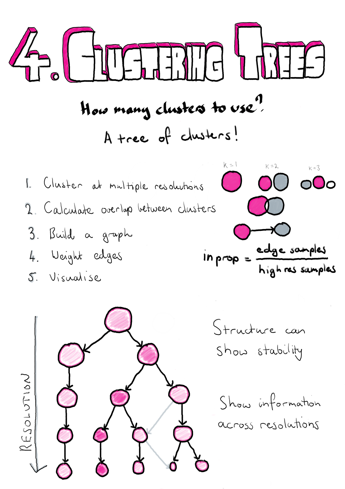

Chapter 4 Visualising clustering across resolutions
“Don’t do what you can’t undo, until you’ve considered what you can’t do once you’ve done it.”
— Robin Hobb
Assassin’s Apprentice, 1995

4.1 Introduction
Clustering of cells to form groups is a common task when analysing scRNA-seq data. This is different from analysis of bulk RNA-seq datasets where the groups are usually known in advance and clustering isn’t required. Because clustering is a new step in analysis of scRNA-seq dat it has received a lot of attention from scRNA-seq methods developers. The need to group samples is not unique to genomic data and clustering techniques are used in many other fields for a wide variety of purposes. Whatever kind of data is of interest, and whatever clustering method is being used, a question that commonly comes up is how many clusters do we want to have? Depending on the clustering method, the number of clusters can be controlled by setting an exact value or by changing a parameter that controls the clustering resolution. The number of clusters can also be indirectly affected by the values of related parameters. The number of clusters that are used in an analysis can often have a profound affect on how the results are interpreted. Existing measures of clustering typically only consider a single clustering resolution at a time or require multiple rounds of permutations and clustering which can be infeasible for large datasets. In this chapter I propose an alternative, visualisation-based aid for deciding which clustering resolution to use.
Clusterings of the same dataset at different resolutions are often related and it is common for new clusters formed at higher resolutions to form by splitting existing clusters. However, when comparing clusterings it is not always clear what those relationships are and how significant they might be. The method I describe here was published in GigaScience and proposes clustering datasets at multiple resolutions and considering the overlap in samples between clusters at neighbouring resolutions [208]. By doing this we can build a graph structure we call a “clustering tree”. Visualising this tree allows us to see where new clusters form, how they are related and the stability of particular clustering resolutions. In the publication we demonstrate this approach using simulated datasets, a simple dataset commonly used as an example for machine learning techniques and a complex scRNA-seq dataset from blood.
While the structure of clustering trees can help choose a clustering resolution to use for an analysis, clustering trees are more generally a compact, information-dense visualisation that can show information across clustering resolutions. This is something that is not possible with traditional visualisations used for clustering results such as t-SNE projections, and is achieved by trading individual information about each sample for summarised information about clusters and adding a resolution dimension. Overlaying important domain knowledge (such as the expression of known marker genes) onto these visualisations can be particularly informative and we also demonstrate this in our paper (Section 4.2). Section 4.3 demonstrates how clustering trees can be combined with other visualisations of scRNA-seq data.
Clustering trees can be produced using the clustree R package which is built on the tidygraph [209], igraph [210] and ggraph [211] packages and is available from CRAN (https://cran.r-project.org/package=clustree). The clustree vignette is included as Appendix D.2 and the manual as Appendix D.2.
4.2 Clustering trees publication
You can read the clustering trees paper here.
4.3 Overlaying clustering trees
In the clustering trees publication we focused on the use of the visualisation as a tool for selecting a clustering resolution, but more generally the clustering tree structure can be used to display information across the resolution dimension. The visualisation that is most commonly used to display scRNA-seq data is the dimensionality reduction plot produced using methods such as PCA, t-SNE [147] or UMAP [148]. In this visualisation each point is a cell placed in a two-dimensional space and coloured using factors such as the assigned cluster or the expression level of a gene. The two visualisations display complementary information. The dimensionality reduction plot shows the location of each individual sample in a low-dimensional space, while the clustering tree trades that sample level resolution for a summarised view of each cluster and swaps the spatial information for a new resolution dimension. It is possible to combine these two approaches by overlaying a clustering tree onto a dimensionality reduction plot. Figure 4.1 shows an example of this using the iris dataset [212,213].
Figure 4.1: Clustering tree of the iris dataset overlaid on a PCA plot. (A) A PCA plot of the samples in the iris dataset coloured by cluster at \(k = 5\) overlaid with a clustering tree showing clustering resolutions from \(k = 1\) to \(k = 5\). (B) The same plot shown from the direction of the x-axis (PC1), the y-axis now shows the clustering resolution and samples are jittered along the x-axis. (C) Same as (B) but from the direction of the y-axis (PC2).
Here instead of using a tree layout algorithm to decide where the cluster nodes are placed, we place them in the low-dimensional space at the mean position of the samples in each cluster. The easiest way to view this overlaid plot (Figure 4.1A) is to imagine looking down on a landscape from above. On the ground we have the individual sample points (here coloured by their highest resolution cluster) and rising up from that we have the clustering tree with the highest resolutions placed closest to the ground and the lowest resolution at the top. As we step down the clustering tree we can see where in this space new clusters are formed. Figures 4.1 B and C show this same view but from a different perspective. Here imagine standing on the ground at the same level as the samples and looking towards the clustering tree. Now the x-axis shows one of the reduced dimensions (PC1 or PC2) and the y-axis show the resolution dimension. Looking at a clustering tree in this way provides an alternative view where the focus is less on the structure of the tree itself and more on how it fits into a space that researchers are more familiar with.